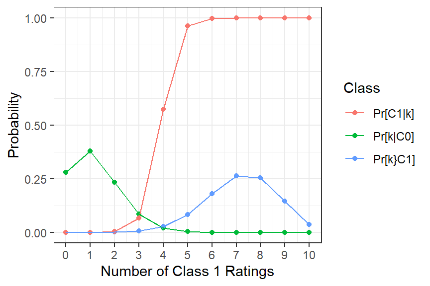
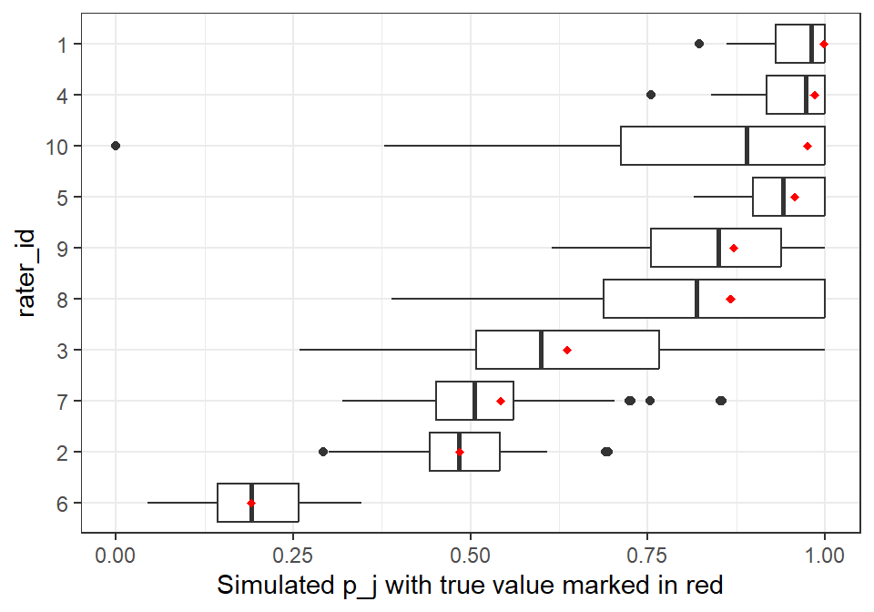

In Chapter 4: The Kappa Paradox we saw how adding parameters can increase the explanatory power of t-a-p models. This is an old idea. The Cohen kappa (Cohen, 1960) dates from the 1960s, and for large data sets can be seen as a variation of the Fleiss kappa, but where each rater has a parameter for random assigments. In the original paper, the formula is derived for two rates, but it can be expanded to any number of them. The application of that idea to the three parameter t-a-p model is to create a \(p_j\) parameter for each rater \(j\). However, this involves complications, and is treated toward the end of this chapter.
The expansion of model parameters maximally includes coefficients for each rater and subject. For example, we could assign a truth parameter \(t_i\) to each subject \(i\), and accuracy and random assignment parameters \(a_j\) and \(p_j\), respectively, to each rater \(j\). The latter requires that we have IDs for the raters. Generally, regression models like this are called hierarchical models or random effects models or fixed effects models, depending on the research tradition (As noted in Agresti (2003), p. 523 and Gelman & Hill (2006), p. 245, fixed versus random effects are not good descriptions for Bayesian models).
The three parameter t-a-p model is already hierarchical in the sense that the ratings for each subject are clustered for analysis. That’s how we create a distribution of agreement to compare with a binomial mixture. The hierarchical model we’re discussing in this chapter is a further extension of that idea, where we add parameters to the model, generally for one of two reasons. One reason is to increase model fit by accounting for variation in the data that is not explained by the three average parameters. The other reason is to obtain estimates for individual subjects or raters.
Individual rater parameters and subject truth values are of interest in many contexts. In educational psychology, we might want to know how well a teacher is able to assess student learning, and how well the students demonstrate knowledge or skill. In medical research, we might want to know how well a doctor is able to diagnose a disease, and how well the patients are responding to treatment. In machine learning, we may be concerned with the quality of training data drawn from human classifications. The ratings of consumer products on sites like Amazon or Yelp can be polluted with unfaithful reviews, so some means of detection is valuable. Likewise, individual subject truth parameters are valuable if we want to make decisions with the rating data, for example in a medical diagnosis, a pass/fail assessment of student learning, or using product ratings to make a selection.
2 Hierarchical Likelihood
So far we have relied on using the rated subject as a unit of analysis (the hierarchical element just mentioned). This approach averages out differences in raters, so that we are in effect assuming all the raters are the same. That assumption allows for an efficient method of calculating likelihood for each subject and accumulating it as a way to fit the parameters. From Chapter 2: The t-a-p Model, we have
The log-likelihood function sums over each unique combination of raters \(R_u\) and Class 1 ratings \(k_u\), with count \(n_u\). The values for \(R_u\), \(k_u\), and \(n_u\) come from counting the ratings in the data. The \(n_u\) count sums up how many subjects have the same combination of raters and Class 1 ratings \((R_u,k_u)\). Assuming there is no other ways to distinguish subjects, the three empirical values \(R_u\), \(k_u\), and \(n_u\) are all we have to distinguish one subject from another. Since truth values are subject-dependent (not rater dependent), the distributional form of a binomial mixture puts the \(t\) outside the binomial distribution function in the likelihood. Without changing much, we could imagine replacing the average \(t\) with individual parameters, which with the arguments on the left hidden in \(\cdot\), is
where \(t_u\) now indexes a truth parameter for subjects that have the same number of raters and Class 1 ratings, the unique \((R_u,k_u)\) pairs. Note that one of the terms \(\text{binom}(R_u,k_u,a + \bar{a}p)\) and \(\text{binom}(R_u,k_u,\bar{a}p)\) will usually be larger than the other, so if we maximize likelihood with \(t_u\) as a free parameter, the optimization will push these truth probabilities toward binary values. Recall that we assumed binary truth in the general t-a-p model. As a demonstration of that using MCMC estimation see the demo. However, assuming that the collection of cases with the same \(R_u\) and \(k_u\) values are have the same class is unrealistic. In the next section we’ll consider values for the \(t_u\) parameters that average over subjects.
If we consider individual rater parameters, as with the Cohen kappa, we can’t use the formulation of the likelihood function in Equation 1, because the raters are not usually clustered in the same way as the subjects. Computing the probability of a combination \((R_u,k_u)\) when raters do not have a common accuracy or random assignment parameter is more complex.
If we abondon the binomial form and consider each rating as a unit of analysis, the log likelihood function for an assignment of raters and their characteristics to ratings is
The sum is over all ratings, and the \(t_i\), \(a_j\), and \(p_j\) parameters are indexed by subject and rater. Here, \(C_{ij}\) is the binary classification assigned by rater \(j\) to subject \(i\), and \(\bar{C_{ij}}\) is the opposite classification. Since each rater only assigns a single rating to a subject, exactly one of \(C_{ij}\) and \(\bar{C_{ij}}\) will be non-zero. In contrast to the combinatoric formulation in Equation 1, we’re summing over both the ratings of Class 0 and Class 1 (not just counts of Class 1), and since raters are now identified and matched to ratings, the factor \(\binom{R}{k}\) is gone. I’ll refer to this variation as rating likelihood, since we accumulate over each rating instead of over each subject, as with Equation 1.
3 Truth Parameters
The t-a-p model assumes that in the unknowable background, there are “latent” binary states \(T_i \epsilon \{0,1\}\) for each subject \(i\). The average truth parameter \(t\) is the estimated proportion of subjects that are in Class 1 in truth. How much can we know about the \(T_i\)’s in hierarchical models?
In t-a-p models with average \(a\) and \(p\) we can only distinguish subjects by the number of raters and Class 1 ratings each recieves. This is the \((R_u, k_u)\) pair in Equation 1. Suppose we now imagine an average truth parameter \(t_u\) for each of these combinations. The conditional probability that the true class of subject \(i\) is 1 (notated \(T_i = 1\)) given that the number of Class 1 ratings for that subject is \(k_u\) out of \(R_u\) total ratings is
where \(N_r\) and \(N_c\) are placeholders for number of raters and Class 1 ratings, respectively.
For illustration, simulated ratings of ten raters with \(t= .5\), \(a = .6\) and \(p = .3\) are shown in Figure 1. The plot shows the distribution of the number of Class 1 ratings \(k\) out of 10 for true Class 1 cases, with the binomial mixture distribution overlaid.
Show the code
#' Illustrate a t-a-p binomial mixture distribution of Class 1 Countsa <- .6p <- .3pr_c0 <- (1-a)*p pr_c1 <- a + pr_c0distr <-data.frame(N_c =0:10) |>rowwise() |>mutate(`Pr[k|C0]`=dbinom(N_c, 10, pr_c0),`Pr[k}C1]`=dbinom(N_c, 10, pr_c1),`Pr[C1|k]`=`Pr[k}C1]`/(`Pr[k|C0]`+`Pr[k}C1]`)) |>gather(Class, Probability, -N_c)distr |>ggplot(aes(x = N_c, y = Probability, color = Class)) +geom_point() +geom_line() +theme_bw() +scale_x_continuous(breaks =0:10) +xlab("Number of Class 1 Ratings")

Figure 1: Sample distribution of Class 1 ratings counts, with \(t= .5\), \(a = .6\) and \(p=.3\). The green and blue lines show the density functions for true Class 0 and Class 1 cases, respecitvely. The red line shows the probability of a Class 1 subject given the number of Class 1 ratings received.
The green and blue lines in Figure 1 trace the distribution of Class 1 ratings out of ten for true Class 0 and Class 1 cases, respectively. The bump in the blue line to the right is because true Class 1 cases are likely to get more Class 1 assignments, since the accuracy is reasonably high. The most likely outcome for a true Class 0 subject is only one Class 1 rating (green line above \(k = 1\)). The red line answers the question “given that we see \(k\) Class 1 ratings, what is the probability that the subject is Class 1 in truth?” This is the conditional probability denoted \(Pr[C_1|k]\). At \(k=4\), meaning a subject got four Class 1 classifications from raters and six of Class 0, it’s more than 50% likely that the subject is Class 1, but it’s close to a coin flip. With fewer than four Class 1 ratings, it’s much more likely that the subject is Class 0.
The conditional probabilities in red in Figure 1 can be used as estimates for \(t_u\) in Equation 2 by first estimating the average t-a-p coefficients and then applying the conditional probability formula for each combination of raters and ratings.
4 Rater Parameters
Suppose that we estimate the \(t_u\) parameters as just described, and that we have rater IDs in the data set. Then for each rater we can create a confusion matrix of the ratings they assigned verus the estimated true class probabilities. From Chapter 1 we have the following average rates in the table, where the average true Class 1 rate \(t\) has been replaced with \(t_u\) and average \(a\) and \(p\) are now specific to rater \(j\).
Table 1: The confusion matrix for a combination of raters \(R\) and Class 1 ratings \(k\) applied rater \(j\). Terms in parentheses are inaccurate ratings. TPR = true positive rate, etc.
Given the estimated \(t_u\) values and rater-identified ratings, we can populate the estimated probabilities in the confusion matrix in Table 1, and then use algebra to solve for the \(a_j\) and \(p_j\) parameters, with
To illustrate, I’ll try this out on the PTSD data set.
Show the code
data(ptsd)# convert Q2 to long formratings <- ptsd |>filter(Question =="Q2") |>select(-Question) |>gather(RaterID, Rating, -SubjectID) |>mutate(rater_id =as.integer(str_extract(RaterID,"\\d+")),rating = Rating -1) |>select(subject_id = SubjectID, rating, rater_id)# summary of ratings by combination (R, k)counts <- tapModel::as_counts(ratings)# get average t-a-p parameter estimatesparams <- tapModel::fit_counts(counts)# compute the rater stats a_j and p_jrater_stats <- tapModel::estimate_aj_pj(ratings, params)# display resultsrater_stats |>kable(digits =2)
Table 2: Rater parameters estimated from the confusion matrix, showing the ID of the rater from the ordinal data with individual rater statistics: c1 is the rate of class 1 assignments; tpr is the true positive rate given the induced truth estimates, and similarly with tnr, fpr, and fnr; a_j and p_j are the t-a-p model parameters for this rater; and bias is p_j - t_i.
rater_id
c1
tpr
tnr
fpr
fnr
a_j
p_j
bias
1
0.84
0.54
0.16
0.30
0.00
0.36
1.00
0.46
2
0.52
0.44
0.38
0.08
0.10
0.65
0.48
-0.05
3
0.56
0.50
0.40
0.06
0.04
0.79
0.64
0.10
4
0.80
0.53
0.20
0.26
0.00
0.43
0.99
0.45
5
0.80
0.53
0.19
0.27
0.01
0.39
0.96
0.42
6
0.46
0.43
0.44
0.02
0.11
0.76
0.19
-0.35
7
0.54
0.48
0.40
0.06
0.06
0.75
0.54
0.00
8
0.59
0.53
0.40
0.06
0.01
0.84
0.87
0.33
9
0.66
0.52
0.32
0.14
0.02
0.65
0.87
0.33
10
0.60
0.54
0.40
0.06
0.00
0.87
0.98
0.44
There is a lot of detailed information in Table 2 that we seem to get for almost free. These estimates suggest that rater 1 was the least accurate and rater 10 the most accurate. This is useful information for classification improvement if it’s right. Testing the reasonableness of these conclusions is the subject of the next section.
5 Units of Likelihood
The search for t-a-p model parameters from a set of ratings is done using maximum likelihood estimation. The likelihood function is a product of the probabilities of the observed ratings, given the model parameters. The objective is to find the values of the t-a-p parameters that maximize this product of probabilities. In actual computation, it is not practical to multiply probabilities, because the product of many small numbers will look like zero to a computer. Instead, we take the log of the likelihood function, which turns the product into a sum.
To compute likelihood for a hierarchical model with individual parameters for subjects and raters, we first use Equation 3 to compute the log likelihood for each rating given the estimated parameters with
\[
\begin{aligned}
\ell^1_{ij} & := \ell(C=1|t_i,a_j,p_j) = \log(t_ia_j+\bar{a}_jp_j) \\
\ell^0_{ij} &:=\ell(C=0|t_i,a_j,p_j) = \log (1 - t_ia_j -\bar{a}_jp_j).
\end{aligned}
\] These are the log probabilities that a pair of subject \(i\) and rater \(j\) will result in a rating of 1 or 0, respectively, given the parameter estimates. The actual ratings are denoted \(C^1_{ij}\) and \(C^0_{ij}\), for ratings of one and zero, respectively. The second step is to calculate the cumulative log probability over all raters and ratings using
The classifications \(C^1_{ij}\) and \(C^0_{ij}\) are distributed as binomial mixtures over subjects for each rater, and in the aggregate will tend toward a bell shape. The multiplication by rater likelihoods and summation of these is similar to a dot project, so the calculation can perhaps be thought of as a kind of projection operator from the data onto the space of parameters. That idea could use further development. Since the \(\ell\) coefficients are opinionated about which subjects are Class 1 because of the inclusion of \(t_i\) in the calculation, the cumulative likelihood will be maximized when \(\ell^1_{ij} > \ell^0_{ij}\) for ratings of 1.
5.1 Likelihood as Information
Since the ratings are binary, we can use ideas from information theory to make sense of the log likelihood. From Shannon (1948), the amount of information in a binary data stream is \(I = x \log_{\frac{1}{2} } x\) per event with probability \(x\), where the information is measured in bits (binary digits). If \(x = 1/2\) is the fraction of 1s in the data stream, then \(I = \log_{\frac{1}{2} } 1/2= 1\) bit per symbol sent.
Note
I will use the convention that \(\log x\) means \(\log_{\frac{1}{2} } x\), without specifying the base each time. This reads oddly for those used to integer log bases, since the log of any probability with base greater than one is negative. Hence there are a lot of expressions that start with negative signs in the usual likelihood formulations. The advantage of log base 1/2 is that we don’t need the negative signs to get a result in bits. Another important difference is that when we maximize likelihood, we minimize the number of informational bits per rating (again, because of the lack of a minus sign).
For a t-a-p model, the average rate of Class 1 assignments is \(c = ta + \bar{a}p\), and heuristically the expected information per rating is hence \(I_{tap} = c \log c + \bar{c} \log \bar{c}\). If all the ratings are of the same type (Class 1, say), the expression becomes zero; no information can be transmitted if the signal never changes. The maximum information rate is when \(c = 1/2\), which is \(I_{tap} = 1\) bit per rating.
The information \(I_{tap}\) has an approximate relationship to likelihood, which is the probability of seeing the provided data set under the model assumptions. To see that, consider the accumulation of log likelihood \(\ell\) by comparing the actual ratings to their probabilities under a given t-a-p model, with a sum over each classification \(\hat{C}_{ij}\) by rater \(j\) of subject \(i\). From Equation 3 we have
Here, the probability \(Pr[C_{ij} = \hat{C}_{ij}]\) in the fitted t-a-p model is \(c = ta + \bar{a}p\) when raters assign \(\hat{C}_{ij} = 1\) to a subject, and and \(\bar{c}\) for \(\hat{C}_{ij} = 0\). \(N\) is the number of ratings. If the model represents the data, the fraction of \(\hat{C}_{ij}= 1\) is \(c\), and there will be approximately \(Nc\) ratings of Class 1. From Equation 5 it’s intuitive to compare t-a-p models on the common scale \(I_{tap}\), bits of information per rating. This isn’t technically correct, because unless the ratings are completely random, correlations within subjects interfere with the information stream analogy. We can see this most directly with the likelihood from Equation 1, where only counts per subject matter. For example, if three out of four raters assign a Class 1 rating with probability \(c = 1/2\), the log likelihood for that subject is
The within-subject variation absorbs half of the four bits that the four ratings nominally provide. A similar effect is present in calculations from Equation 3. If one subject has 1000 raters and another subject has 5, the information of the 1000th rating of the first subject is intuitively less informative than the fifth rating from the second. Similarly, a rating from a rater with accuracy zero isn’t as informative as a rater with accuracy one. Accordingly, for hierarchical models we could consider weighting ratings according to such factors.
Research Project
How might we modify Equation 3 to assign weights to ratings according to the relative amount of information provided?
In practice, we compute \(\ell_{\text{rating}}(\cdot)\) from Equation 3, and then divide by the number of ratings to get the bits per rating to get \(I_{tap}\). This can be done even for the subject-likelihood average t-a-p models computed from Equation 1 by assigning each of the (possibly anonymous) raters the same average accuracy and random assignment parameters.
5.2 Signal and Noise
In addition to splitting the ratings by the rating of 0 or 1 as in Equation 5, we could also split them by their accuracy. With probability \(a\) a rating will be accurate, in which case we have an information stream with characteristics determined by \(t\). In the complementary case, it’s determined by \(p\). Then we can sum over the ratings to extract two kinds of information with
Note that for unbiased raters (\(t=p= c\)), \(I_{\text{signal}} + I_{\text{noise}} = c \log c + \bar{c} \log \bar{c} = I_{tap}\), but in general the sum of signal and noise won’t equal the average likelihood \(I_{tap}\). The information per bit of two communications channels is not generally additive when we combine them. As an example, a channel of all zeros and a channel of all ones each have zero information, but if we mix the two up, the result will be positive.
The names “signal” and “noise” are borrowed from communication theory, but they can be misunderstood here. The maximum signal occurs when raters are perfectly accurate and samples are split evenly between true Class 1 and Class 0 cases. It’s not always possible or desirable to have evenly balanced classes, for example with a medical test that detects a rare condition. Such unbalanced data sets are common in ratings (see Chapter 4: The Kappa Paradox).
6 Assessing Model Fit
We can now create t-a-p models with individual parameters for raters and subjects, but how do we know that these models are any better than the simpler three-parameter t-a-p model for explaining the data? We’ll explore that question here with two basic approaches. One is to compare models directly using the likelihood scale of zero to one bits of randomness per rating. The other is to take a proposed set of model parameters and simulate new ratings sets to see how unusual the observed ratings are under the model assumptions. The outline is:
Given prior experience or literature on the given type of ratings, write down expectations for \(t\) an \(a\). Compute the three-parameter t-a-p solution with params = fit_counts(as_counts(ratings)) and inspect for reasonableness (given your priors) and degeneracy (any coefficient of zero or one). If the accuracy coefficient is less than about .3, be aware that it may be misleading. This will depend on the sample size as well as the t-a-p estimates.
Use the t-a-p parameters to estimate the \(t_u\) truth probabilities and rater \(a_j\) and \(p_j\) parameters using rating_params = fit_ratings(ratings) and compare the model fit for this hierarchical model to the three-parameter version using model_fit_comparison(rating_params)$plot. This uses the estimated parameters to simulate new ratings to see if the original data set looks like the simulated ones, an indication that the model represents the data. We’re looking for two things here. One is whether the hierarchical model has better fit (fewer bits/rating) than the average model. If not, we should probably stick with the three-parameter model to avoid overfitting. The second thing to inspect is the relationship to the simulated likelihood (bits/rating) and the dashed line indicating the likelihood for the actual data set. Ideally this line will fall well within the bell shape of the simulation distribution. That indicates that the original data is not unusual with respect to the data sets generated by those parameters.
Use the rating_params, which have all the hierarchical coefficients, to generate new sample ratings and then see if the solver can properly estimate those coefficients. You can generate boxplots for accuracy with estimate_rater_parameter_error(rating_params)$plot_a. This gives us an idea of how much the sampling error combined with estimation error affect the estimates.
Optionally use Bayesian models to further refine parameters and their likely distributions. The shinystan package has interactive tools for detailed analysis.
This process isn’t intended to produce a single statistic that tells us if the model is “good” or not. Rather, it’s intended to be a work flow that allows an analyst to develop an intuition about the data and models to aid in judgments about applications of the ratings. At all points, it’s necessary to apply judgment to test the results for reasonableness with respect to the subjects, raters, and rating processes that produced the data.
6.1 Example: Uniform Raters
As a simple illustration of model assessment, I’ll start with a simulated data set where all the raters and subjects have the same average parameters, subject only to sampling error. The data set is generated with 200 subjects and 20 raters each, with \(t = .5\), \(a = .7\), and \(p = .2\) (the raters are significantly biased away from Class 1). One purpose of this example is to inspire some confidence in the method, since we already know the parameter values. Another purpose is to show how we can investigate a parameter set by simulating values from it to make sure we can recover them. This can be done, for example, after estimating parameters from a real rating set.
Table 3: Model fit for 20 uniform raters on 200 subjects, showing the fitted parameters for the average t-a-p model with simulated ratings where t = .5, a = .7, and p = .2.
t
a
p
0.51
0.69
0.2
Here, we know the real values of the parameters, but normally we would not. The parameters don’t look degenerate (close to zero or one). Next we assess the likelihood in units of bits/rating.
Figure 2: Model fit for uniform raters, showing the simulated distribution of bits per rating for the average and hierarchical t-a-p models with simulated ratings where t = .5, a = .7, and p = .2. The vertical lines shows the bits per rating for each model with the original data set, and the densities are for data sets simulated from the respective parameters.
The model fit in Figure 2 shows overlapping distributions of log likelihoods for the hierarchical and average (three-parameter) t-a-p models. Recall that better fit for a model means a smaller value of bits/rating (hence larger likelihood). Here there’s no difference between the two models, so we can conclude that the hierarchical model is adding parameters with no benefit. In this case, we would choose the average three-parameter t-a-p model as the most parsimonious description of the data. Because this is simulated data, we know that’s the correct conclusion.
6.2 Example: PTSD Data
We’ll now analyze the PTSD data set, which has unknown true parameter values. This is not my research data, so I don’t have intuition about what reasonable answers might look like. We already generated parameter estimates for raters in Table 2, so we can skip to the model comparison with the three-parameter model.
Unlike the case in Figure 2, the model fit for the PTSD data set in Figure 3 shows that the hierarchical rater model is a much better fit than the average model. The bits per rating for the individual model is .46, while the average model is .57. So the first conclusion is that raters probably vary in their accuracy and bias. This seems reasonable given that these are human raters who are classifying complex evidence. To pursue the reasonableness of that, if we had the original data we could examine in detail the classifications made by the raters with lowest and highest accuracy, for example by getting more ratings from a few experts. This kind of information could be useful in improving classifications generally.
In both distributions in Figure 3, the dashed line showing the bits/rating for the actual data is somewhat to the left of the mean of the distribution of the bits/rating from the simulated ratings. The parameters are generated from the given data, so we’d expect that the original data set would be a somewhat better fit for the model than data that’s randomly generated from the parameters. That’s the case here, but this “overfitting” subjectively doesn’t look too bad. It would be different if the dashed blue line were way off to the left of the distribution. That would indicate a degree of overfitting (or other problem) that we should follow up on.
To test the robustness of the individual model fit, we can simulate new data sets from the hierarchcial parameters and then see how well we can recover the parameters. This is computationally expensive for large data sets, so I’ll only run 50 of these.
The results in Figure 4 show that the individual rater parameters are well recovered from the simulated data sets. The red markers show the proposed accuracy estimates for each rater, and the boxplots show the distribution of recovered values after simulating new ratings and recovering the parameters. We can do the same for the \(p_j\) parameters.
Show the code
error_est$plot_p

Figure 5
The plots in Figure 5 show that the estimates are robust, and that raters 1,4,5, and 10 are quite biased toward assigning Class 1. In practice, this feedback can likely be used to improve ratings.
In summary, the PTSD data shows that we can extract much more meaningful information from the ratings than is possible with the kappa statistics. Note, however, that we only get the full benefit of these new methods if we have rater identification for each rating.
7 Bayesian Models
One limitation of the approach illustrated in the PTSD example above is that the truth parameters \(t_i\) are assumed fixed throughout. Recall that the \(t_u\) values, which are unique to each species of rating counts (e.g. 3 out of 5 Class 1 ratings), are generated from the average t-a-p ratings. The rater parameters \(a_j\) and \(p_j\) come from the \(t_i\) estimates. Hence, there is bound to be some error in the true Class 1 probabilities. To avoid overfitting, we can introduce a form of regularization, which pushes hierarchical parameter estimates toward a mean. The goal of that approach is increased generalizability, meaning that the parameter estimates obtained describe a wider range of data.
I have done quite a lot of work on the Bayesian approach, and the current tapModel package has functions to implement them, but they’re still a work in progress. I’ll update this page when it’s ready.
References
Agresti, A. (2003). Categorical data analysis (Vol. 482). John Wiley & Sons.
Cohen, J. (1960). A coefficient of agreement for nominal scales. Educational and Psychological Measurement, 20(1), 37–46.
Gelman, A., & Hill, J. (2006). Data analysis using regression and multilevel/hierarchical models. Cambridge university press.
Shannon, C. E. (1948). A mathematical theory of communication. The Bell System Technical Journal, 27(3), 379–423.